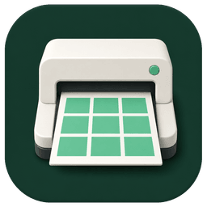

Più foto su un foglio
Distribuisce automaticamente le immagini sulla pagina e consente di gestire margini e distanza tra gli scatti.
Print Flow compone più immagini su un solo foglio, così il fotografo può sfruttare meglio i formati supportati dalla stampante e preparare velocemente interi ordini.

Chi stampa in studio deve spesso tenere rotoli o supporti diversi per ogni misura. Inoltre, preparare a mano più fotografie sulla stessa pagina rallenta il banco stampa. Print Flow crea il foglio finale senza dover costruire ogni volta la composizione in un programma grafico.
Distribuisce automaticamente le immagini sulla pagina e consente di gestire margini e distanza tra gli scatti.
Include preset 10×15, 13×18, 15×20, 20×30 e A4, oltre a un formato personalizzato.
Scegli adattamento o riempimento, rotazione automatica e resa a colori o in bianco e nero.
Dall’anteprima della scheda SD puoi selezionare fino a 500 fotografie e aprirle direttamente in Print Flow. Il passaggio usa riferimenti locali verificati, mantiene l’ordine della selezione e segnala i file che non possono essere letti.
Mantieni la scheda collegata fino all’esportazione del foglio; le foto non vengono caricate online né duplicate nel manifest di passaggio.
Una stampante fotografica come la DNP RX1 arriva al formato 15×20. Invece di cambiare supporto quando servono stampe 10×15, puoi usare il formato più grande e impaginare due fotografie 10×15 sulla stessa uscita. In questo modo ottimizzi il materiale già caricato e riduci i cambi durante il lavoro.
Seleziona la cartella (o la selezione di Archivio Flow) e indica quante copie vuoi di ogni scatto.
Quante foto per pagina, un formato istantaneo (Polaroid, Instax, Hi-Print) oppure una misura personalizzata.
Il programma prova ogni carta, mostra quante foto ci stanno, consiglia quella che spreca meno e suggerisce se stampare in verticale o in orizzontale. Se la tua carta ha una misura particolare, la inserisci a mano.
Inquadra le foto trascinandole sul foglio, regola margini e distanza, poi esporta in JPEG, PNG, PDF o TIFF pronti per la stampa.
Print Flow prepara i file impaginati: non sostituisce il driver né il software di gestione della stampante.
Gestisce ordini con misure diverse senza ripetere ogni composizione a mano.
Prepara più immagini per foglio quando velocità e continuità di stampa sono essenziali.
Sfrutta il supporto più grande per produrre formati più piccoli e limitare cambi e scarti.
Il classico bordo bianco, l'inquadratura che scegli tu e l'impaginazione su fogli standard o personalizzati.